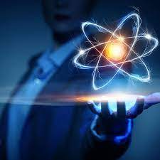

Introdução
O QuarkStorm é o seu lugar para descobrir o mundo quântico de um jeito simples e cativante! Aqui, você vai explorar ideias incríveis sobre o universo, com histórias e curiosidades que conectam ciência e o dia a dia.

QuarkStorm
Introdução
O QuarkStorm é o seu lugar para descobrir o mundo quântico de um jeito simples e cativante! Aqui, você vai explorar ideias incríveis sobre o universo, com histórias e curiosidades que conectam ciência e o dia a dia.
Breve resumo
No final do século XIX, cientistas notaram que as leis clássicas não explicavam o comportamento de átomos e luz. A partir de 1900, novas ideias mostraram que a energia funciona em pequenos pacotes, dando origem à física quântica. Essa ciência revelou um universo cheio de surpresas e hoje impulsiona inovações como computadores e tecnologias de comunicação.
Princípios Quânticos
🔹 Sobreposição Quântica
Partículas (como elétrons) podem estar em vários estados ao mesmo tempo até serem medidas.
Exemplo: Uma moeda quântica é "cara" e "coroa" até ser observada.
Aplicação: Qubits em computadores quânticos, que representam 0 e 1 simultaneamente, aumentam o poder de processamento.
🔹 Emaranhamento Quântico
Duas partículas conectadas de forma que o estado de uma afeta a outra instantaneamente, mesmo a grandes distâncias.
Origem: Prevista por Einstein (paradoxo EPR, 1935). Confirmada por Alain Aspect (1980).
Aplicação: Criptografia quântica e comunicação ultrassegura.
🔹 Tunelamento Quântico
Partículas atravessam barreiras de energia impossíveis no mundo clássico.
Exemplo: Elétrons atravessam "paredes" em chips.
Aplicação: Microscópios de alta precisão e reações nucleares no Sol.
🔹 Decoerência Quântica
Sistemas quânticos perdem propriedades (como sobreposição) ao interagir com o ambiente.
Desafio: Manter qubits estáveis em computadores quânticos.
🔹 Qubits e Computação Quântica
Qubits são a base da computação quântica, representando múltiplos estados ao mesmo tempo.
Vantagens: Resolvem problemas complexos, como criptografia, simulação de moléculas e otimização de processos.
Linha do Tempo
Esta linha do tempo traça os marcos fundamentais da mecânica quântica, destacando os eventos que definiram uma das áreas mais intrigantes da ciência moderna. De ideias pioneiras a experimentos revolucionários, cada passo mostra como a física quântica evoluiu, impactando nosso entendimento do universo e inspirando inovações tecnológicas.
🔹1905s: Einstein explica o efeito fotoelétrico com fótons
Albert Einstein usou a ideia de quanta de Planck para explicar por que a luz, ao atingir certos metais, libera elétrons. Ele sugeriu que a luz é feita de partículas, chamadas fótons, cada uma com uma energia específica. Esse trabalho rendeu a ele o Nobel de Física em 1921 e solidificou a base quântica da luz.
🔹1925s: Schrödinger e Heisenberg desenvolvem a mecânica quântica
Werner Heisenberg criou a mecânica matricial, descrevendo o comportamento de partículas com equações matemáticas. Erwin Schrödinger, por outro lado, desenvolveu a equação de onda, que descreve como partículas como elétrons "ondulam" probabilisticamente. Essas duas abordagens, embora diferentes, são equivalentes e formaram o coração da teoria quântica moderna.
🔹1935s: Paradoxo EPR e debate sobre emaranhamento
Einstein, Podolsky e Rosen publicaram o paradoxo EPR, questionando se a mecânica quântica era "completa". Eles propuseram o emaranhamento quântico, onde partículas conectadas afetam umas às outras instantaneamente, desafiando a ideia de que nada supera a velocidade da luz. Einstein achava isso absurdo, chamando de “ação fantasmagórica”. Schrödinger também entrou no debate, introduzindo o famoso experimento mental do "Gato de Schrödinger".
🔹1980s: Alain Aspect comprova o emaranhamento
O físico francês Alain Aspect realizou experimentos com fótons emaranhados, provando que suas propriedades estão realmente conectadas, como previsto pelo emaranhamento. Seus resultados confirmaram a mecânica quântica e refutaram as ideias de Einstein de que havia “variáveis ocultas” explicando o fenômeno. Isso abriu portas para aplicações como criptografia quântica.
🔹2000s+: Primeiros protótipos de computadores quânticos
A partir dos anos 2000, empresas como IBM, Google e D-Wave começaram a desenvolver computadores quânticos, usando qubits que exploram sobreposição e emaranhamento. Esses protótipos ainda são experimentais, mas já mostram potencial para resolver problemas complexos, como simulações químicas e otimização
Aplicações Modernas
- Computação quântica (Google, IBM).
- Criptografia inviolável.
- Sensores quânticos de alta precisão.
- Medicina (ressonância magnética).
Curiosidades
“Quântico” é popular em filmes (ex.: Homem-Formiga). Einstein criticava a aleatoriedade quântica; Bohr defendia. Memes do Gato de Schrödinger brincam com “vivo e morto” ao mesmo tempo.